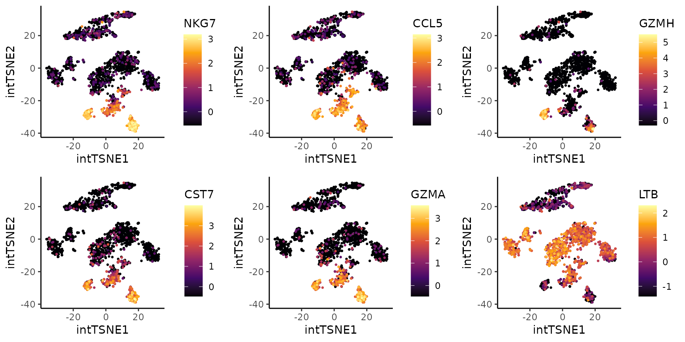

Dataset
To illustrate the multi-level integration algorithm, we will use in
this vignette two 10X PBMCs (Peripheral Blood Mononuclear Cells) 3’
assays: V1 and V2. The datasets have
been downloaded from 10X website. The PBMC dataset V1
corresponds to sample pbmc6k and V2 to
pbmc8k:
Cells were annotated using the annotations provided by Korsunsky et
al., 2019 (Source Data Figure 4 file). The overall data was
downsampled to 2K cells (1K per assay) and 2K highly variable genes
selected with scran R package. To facilitate the
reproduction of this vignette, the data is distributed through
Zenodo as a SingleCellExperiment object, the
object (class) required by most functions in Coralysis (see
Chapter
4 The SingleCellExperiment class - OSCA manual). The
SCE object provided comprises counts (raw
count data), logcounts (log-normalized data) and cell
colData (which includes batch and cell labels, designated
as batch and cell_type, respectively).
Run the code below to import the R packages and data
required to reproduce this vignette.
# Packages
library("ggplot2")
library("Coralysis")
library("SingleCellExperiment")
# Import data from Zenodo
data.url <- "https://zenodo.org/records/14845751/files/pbmc_10Xassays.rds?download=1"
pbmc_10Xassays <- readRDS(file = url(data.url))DimRed: pre-integration
The batch effect between assays can be inspected below by projecting
the data onto t-distributed Stochastic Neighbor Embedding
(t-SNE). This can be achieved by running sequentially the
Coralysis functions RunPCA and
RunTSNE. Provide a seed before running each one of these
functions to ensure reproducibility. The function RunPCA
runs by default the PCA method implemented the R package
irlba (pca.method="irlba"), which requires a
seed to ensure the same PCA result. In addition, the
assay.name argument needs to be provided, otherwise uses by
default the probabilities which are obtained only after integration
(after running RunParallelDivisiveICP). The assay
logcounts, corresponding to the log-normalized data, and
number of principal components to use p were provided. In
this case, the data has been previously normalized, but it could have
been normalized using methods available in Bioconductor (see Chapter
7 Normalization - OSCA manual). Any categorical variable available
in colData(pbmc_10Xassays), such as batch or
cell_type, can be visualized in a low dimensional embedding
stored in reducedDimNames(pbmc_10Xassays) with the
Coralysis function PlotDimRed.
# Compute PCA & TSNE
set.seed(123)
pbmc_10Xassays <- RunPCA(object = pbmc_10Xassays,
assay.name = "logcounts",
p = 30, dimred.name = "unintPCA")
set.seed(123)
pbmc_10Xassays <- RunTSNE(pbmc_10Xassays,
dimred.type = "unintPCA",
dimred.name = "unintTSNE")
# Plot TSNE highlighting the batch & cell type
unint.batch.plot <- PlotDimRed(object = pbmc_10Xassays,
color.by = "batch",
dimred = "unintTSNE",
point.size = 0.01,
legend.nrow = 1,
seed.color = 1024)
unint.cell.plot <- PlotDimRed(object = pbmc_10Xassays,
color.by = "cell_type",
dimred = "unintTSNE",
point.size = 0.01,
legend.nrow = 5,
seed.color = 7)
cowplot::plot_grid(unint.batch.plot, unint.cell.plot, ncol = 2, align = "vh")
Multi-level integration
Integrate assays with the multi-level integration algorithm
implemented in Coralysis by running the function
RunParallelDivisiveICP. The only arguments required by this
function are object and batch.label. The
object requires a SingleCellExperiment object
with the assay logcounts. The matrix in
logcounts should be sparse, i.e.,
is(logcounts(pbmc_10Xassays), "dgCMatrix") is
TRUE, and it should not contain non-expressing genes. This
is ensured by running PrepareData before. The
batch.label argument requires a label column name in
colData(pbmc_10Xassays) corresponding to the batch label
that should be used for integration. In the absence of a batch, the same
function, RunParallelDivisiveICP, can be run without
providing batch.label (i.e.,
batch.label = NULL), in which case the data will be modeled
through the algorithm to identify fine-grained populations that do not
required batch correction. An higher number of threads can
be provided to speed up computing time depending on the number of cores
available. For this example, the algorithm was run 10 times
(L = 10), but generally, this number should be higher (with
the default being L = 50).
# Prepare data for integration:
#remove non-expressing genes & logcounts is from `dgCMatrix` class
pbmc_10Xassays <- PrepareData(object = pbmc_10Xassays)## Data in `logcounts` slot already of `dgCMatrix` class...## 2000/2000 features remain after filtering features with only zero values.
# Perform integration with Coralysis
set.seed(1024)
pbmc_10Xassays <- RunParallelDivisiveICP(object = pbmc_10Xassays,
batch.label = "batch",
L = 10, threads = 2)##
## Building training set...## Training set successfully built.##
## Computing cluster seed.##
## Initializing divisive ICP clustering...## | | | 0% | |======== | 11% | |================ | 22% | |======================= | 33% | |=============================== | 44% | |======================================= | 56% | |=============================================== | 67% | |====================================================== | 78% | |============================================================== | 89% | |======================================================================| 100%##
## Divisive ICP clustering completed successfully.##
## Predicting cell cluster probabilities using ICP models...## Prediction of cell cluster probabilities completed successfully.##
## Multi-level integration completed successfully.DimRed: post-integration
The integration result can be visually inspected by running
sequentially the functions RunPCA and RunTSNE.
The assay.name provided to RunPCA must be
joint.probability (the default), the primary output of
integration with Coralysis. The probability matrices from
Coralysis (i.e., joint.probability) can be
used to obtain an integrated embedding by running
RunPCA(..., assay.name = "joint.probability"). This
integrated PCA can, in turn, be used downstream for clustering or
non-linear dimensional reduction techniques, such as
RunTSNE. Below, the integrated PCA was named
intPCA.
# Compute PCA with joint cluster probabilities & TSNE
set.seed(123)
pbmc_10Xassays <- RunPCA(pbmc_10Xassays,
assay.name = "joint.probability",
dimred.name = "intPCA")## Divisive ICP: selecting ICP tables multiple of 4
set.seed(123)
pbmc_10Xassays <- RunTSNE(pbmc_10Xassays,
dimred.type = "intPCA",
dimred.name = "intTSNE")
# Plot TSNE highlighting the batch & cell type
int.batch.plot <- PlotDimRed(object = pbmc_10Xassays,
color.by = "batch",
dimred = "intTSNE",
point.size = 0.01,
legend.nrow = 1,
seed.color = 1024)
int.cell.plot <- PlotDimRed(object = pbmc_10Xassays,
color.by = "cell_type",
dimred = "intTSNE",
point.size = 0.01,
legend.nrow = 5,
seed.color = 7)
cowplot::plot_grid(int.batch.plot, int.cell.plot,
ncol = 2, align = "vh")
Clustering
Run graph-based clustering with the scran function
clusterCells (see Chapter
5 Clustering - OSCA manual).
# Graph-based clustering on the integrated PCA w/ 'scran' package
blusparams <- bluster::SNNGraphParam(k = 15, cluster.fun = "louvain")
set.seed(123)
pbmc_10Xassays$cluster <- scran::clusterCells(pbmc_10Xassays,
use.dimred = "intPCA",
BLUSPARAM = blusparams)
# Plot clustering
clt.plot <- PlotDimRed(object = pbmc_10Xassays,
color.by = "cluster",
dimred = "intTSNE",
point.size = 0.01,
legend.nrow = 3,
seed.color = 65)
cowplot::plot_grid(int.batch.plot, int.cell.plot,
clt.plot, ncol = 3, align = "h")Cluster markers
Identify the cluster markers by running the Coralysis
function FindAllClusterMarkers. Provide the
clustering.label, in this case, the label used above, i.e.,
cluster. The top three positive markers per cluster were
retrieved and plotted below using the Coralysis function
HeatmapFeatures.
# Cluster markers
cluster.markers <- FindAllClusterMarkers(object = pbmc_10Xassays, clustering.label = "cluster")## -----------------------------------
## testing cluster 1
## 1128 features left after min.pct filtering
## 1128 features left after min.diff.pct filtering
## 215 features left after log2fc.threshold filtering
## -----------------------------------
## -----------------------------------
## testing cluster 2
## 1203 features left after min.pct filtering
## 1203 features left after min.diff.pct filtering
## 287 features left after log2fc.threshold filtering
## -----------------------------------
## -----------------------------------
## testing cluster 3
## 1167 features left after min.pct filtering
## 1167 features left after min.diff.pct filtering
## 427 features left after log2fc.threshold filtering
## -----------------------------------
## -----------------------------------
## testing cluster 4
## 1171 features left after min.pct filtering
## 1171 features left after min.diff.pct filtering
## 443 features left after log2fc.threshold filtering
## -----------------------------------
## -----------------------------------
## testing cluster 5
## 1194 features left after min.pct filtering
## 1194 features left after min.diff.pct filtering
## 283 features left after log2fc.threshold filtering
## -----------------------------------
## -----------------------------------
## testing cluster 6
## 1130 features left after min.pct filtering
## 1130 features left after min.diff.pct filtering
## 289 features left after log2fc.threshold filtering
## -----------------------------------
## -----------------------------------
## testing cluster 7
## 1199 features left after min.pct filtering
## 1199 features left after min.diff.pct filtering
## 189 features left after log2fc.threshold filtering
## -----------------------------------
## -----------------------------------
## testing cluster 8
## 1154 features left after min.pct filtering
## 1154 features left after min.diff.pct filtering
## 392 features left after log2fc.threshold filtering
## -----------------------------------
## -----------------------------------
## testing cluster 9
## 1239 features left after min.pct filtering
## 1239 features left after min.diff.pct filtering
## 363 features left after log2fc.threshold filtering
## -----------------------------------
## -----------------------------------
## testing cluster 10
## 1473 features left after min.pct filtering
## 1473 features left after min.diff.pct filtering
## 359 features left after log2fc.threshold filtering
## -----------------------------------
## -----------------------------------
## testing cluster 11
## 1138 features left after min.pct filtering
## 1138 features left after min.diff.pct filtering
## 280 features left after log2fc.threshold filtering
## -----------------------------------
## -----------------------------------
## testing cluster 12
## 1208 features left after min.pct filtering
## 1208 features left after min.diff.pct filtering
## 344 features left after log2fc.threshold filtering
## -----------------------------------
# Select the top 3 positive markers per cluster
top3.markers <- lapply(X = split(x = cluster.markers, f = cluster.markers$cluster), FUN = function(x) {
head(x[order(x$log2FC, decreasing = TRUE),], n = 3)
})
top3.markers <- do.call(rbind, top3.markers)
top3.markers <- top3.markers[order(as.numeric(top3.markers$cluster)),]
# Heatmap of the top 3 positive markers per cluster
HeatmapFeatures(object = pbmc_10Xassays,
clustering.label = "cluster",
features = top3.markers$marker,
seed.color = 65)
DGE
Coralysis was able to separate the CD8 effector T cells
into two clusters: 6 and 11. From the differential gene expression (DGE)
analysis below, it is clear that cluster 11 is more cytotoxic and
similar to NK cells (expressing GZMH and GZMB) than cluster 6.
# DGE analysis: cluster 6 vs 11
dge.clt6vs11 <- FindClusterMarkers(pbmc_10Xassays,
clustering.label = "cluster",
clusters.1 = "6",
clusters.2 = "11")## testing cluster group.1
## 997 features left after min.pct filtering
## 997 features left after min.diff.pct filtering
## 303 features left after log2fc.threshold filtering## p.value adj.p.value log2FC pct.1 pct.2 diff.pct marker
## NKG7 3.395687e-65 6.791373e-62 -4.087289 0.11403509 1.0000000 0.8859649 NKG7
## CCL5 2.349768e-63 4.699536e-60 -3.838459 0.12573099 1.0000000 0.8742690 CCL5
## GZMH 9.265926e-86 1.853185e-82 -3.170614 0.01461988 1.0000000 0.9853801 GZMH
## CST7 1.986018e-69 3.972037e-66 -2.447930 0.04970760 0.9436620 0.8939544 CST7
## GZMA 3.278546e-66 6.557091e-63 -2.417989 0.05263158 0.9154930 0.8628614 GZMA
## LTB 2.631790e-33 5.263580e-30 2.325730 0.96491228 0.2253521 0.7395602 LTB
top6.degs <- head(dge.clt6vs11[order(abs(dge.clt6vs11$log2FC),
decreasing = TRUE),"marker"])
exp.plots <- lapply(X = top6.degs, FUN = function(x) {
PlotExpression(object = pbmc_10Xassays, color.by = x,
scale.values = TRUE, point.size = 0.5, point.stroke = 0.5)
})
cowplot::plot_grid(plotlist = exp.plots, align = "vh", ncol = 3)
R session
# R session
sessionInfo()## R version 4.4.2 (2024-10-31)
## Platform: x86_64-pc-linux-gnu
## Running under: Ubuntu 24.04.1 LTS
##
## Matrix products: default
## BLAS: /usr/lib/x86_64-linux-gnu/openblas-pthread/libblas.so.3
## LAPACK: /usr/lib/x86_64-linux-gnu/openblas-pthread/libopenblasp-r0.3.26.so; LAPACK version 3.12.0
##
## locale:
## [1] LC_CTYPE=C.UTF-8 LC_NUMERIC=C LC_TIME=C.UTF-8
## [4] LC_COLLATE=C.UTF-8 LC_MONETARY=C.UTF-8 LC_MESSAGES=C.UTF-8
## [7] LC_PAPER=C.UTF-8 LC_NAME=C LC_ADDRESS=C
## [10] LC_TELEPHONE=C LC_MEASUREMENT=C.UTF-8 LC_IDENTIFICATION=C
##
## time zone: UTC
## tzcode source: system (glibc)
##
## attached base packages:
## [1] stats4 stats graphics grDevices utils datasets methods
## [8] base
##
## other attached packages:
## [1] SingleCellExperiment_1.28.1 SummarizedExperiment_1.36.0
## [3] Biobase_2.66.0 GenomicRanges_1.58.0
## [5] GenomeInfoDb_1.42.3 IRanges_2.40.1
## [7] S4Vectors_0.44.0 BiocGenerics_0.52.0
## [9] MatrixGenerics_1.18.1 matrixStats_1.5.0
## [11] Coralysis_1.0.0 ggplot2_3.5.1
##
## loaded via a namespace (and not attached):
## [1] rlang_1.1.5 magrittr_2.0.3 flexclust_1.4-2
## [4] compiler_4.4.2 systemfonts_1.2.1 vctrs_0.6.5
## [7] reshape2_1.4.4 stringr_1.5.1 pkgconfig_2.0.3
## [10] crayon_1.5.3 fastmap_1.2.0 XVector_0.46.0
## [13] labeling_0.4.3 scuttle_1.16.0 rmarkdown_2.29
## [16] ggbeeswarm_0.7.2 UCSC.utils_1.2.0 ragg_1.3.3
## [19] xfun_0.50 modeltools_0.2-23 bluster_1.16.0
## [22] zlibbioc_1.52.0 cachem_1.1.0 beachmat_2.22.0
## [25] jsonlite_1.8.9 DelayedArray_0.32.0 BiocParallel_1.40.0
## [28] irlba_2.3.5.1 parallel_4.4.2 aricode_1.0.3
## [31] cluster_2.1.6 R6_2.6.0 bslib_0.9.0
## [34] stringi_1.8.4 RColorBrewer_1.1-3 limma_3.62.2
## [37] jquerylib_0.1.4 Rcpp_1.0.14 iterators_1.0.14
## [40] knitr_1.49 snow_0.4-4 Matrix_1.7-1
## [43] igraph_2.1.4 tidyselect_1.2.1 abind_1.4-8
## [46] yaml_2.3.10 codetools_0.2-20 doRNG_1.8.6.1
## [49] lattice_0.22-6 tibble_3.2.1 plyr_1.8.9
## [52] withr_3.0.2 ggrastr_1.0.2 Rtsne_0.17
## [55] evaluate_1.0.3 desc_1.4.3 pillar_1.10.1
## [58] rngtools_1.5.2 foreach_1.5.2 generics_0.1.3
## [61] sparseMatrixStats_1.18.0 munsell_0.5.1 scales_1.3.0
## [64] class_7.3-22 glue_1.8.0 metapod_1.14.0
## [67] pheatmap_1.0.12 LiblineaR_2.10-24 tools_4.4.2
## [70] BiocNeighbors_2.0.1 ScaledMatrix_1.14.0 SparseM_1.84-2
## [73] RSpectra_0.16-2 locfit_1.5-9.11 RANN_2.6.2
## [76] fs_1.6.5 scran_1.34.0 Cairo_1.6-2
## [79] cowplot_1.1.3 grid_4.4.2 edgeR_4.4.2
## [82] colorspace_2.1-1 GenomeInfoDbData_1.2.13 beeswarm_0.4.0
## [85] BiocSingular_1.22.0 vipor_0.4.7 cli_3.6.3
## [88] rsvd_1.0.5 textshaping_1.0.0 viridisLite_0.4.2
## [91] S4Arrays_1.6.0 dplyr_1.1.4 doSNOW_1.0.20
## [94] gtable_0.3.6 sass_0.4.9 digest_0.6.37
## [97] SparseArray_1.6.1 dqrng_0.4.1 farver_2.1.2
## [100] htmltools_0.5.8.1 pkgdown_2.1.1 lifecycle_1.0.4
## [103] httr_1.4.7 statmod_1.5.0References
Amezquita R, Lun A, Becht E, Carey V, Carpp L, Geistlinger L, Marini F, Rue-Albrecht K, Risso D, Soneson C, Waldron L, Pages H, Smith M, Huber W, Morgan M, Gottardo R, Hicks S (2020). “Orchestrating single-cell analysis with Bioconductor.” Nature Methods, 17, 137-145. https://www.nature.com/articles/s41592-019-0654-x.
Lun ATL, McCarthy DJ, Marioni JC (2016). “A step-by-step workflow for low-level analysis of single-cell RNA-seq data with Bioconductor.” F1000Res., 5, 2122. doi:10.12688/f1000research.9501.2.
Sousa A, Smolander J, Junttila S, Elo L (2025). “Coralysis enables sensitive identification of imbalanced cell types and states in single-cell data via multi-level integration.” bioRxiv. doi:10.1101/2025.02.07.637023
Wickham H (2016). “ggplot2: Elegant Graphics for Data Analysis.” Springer-Verlag New York.